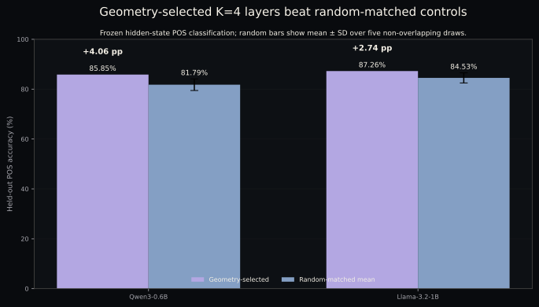
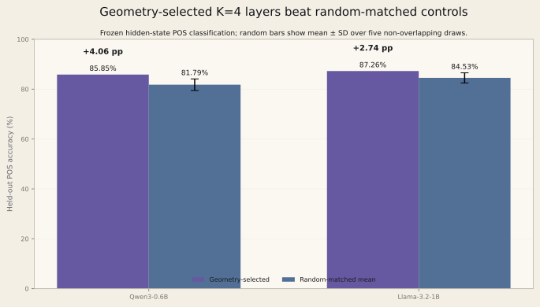
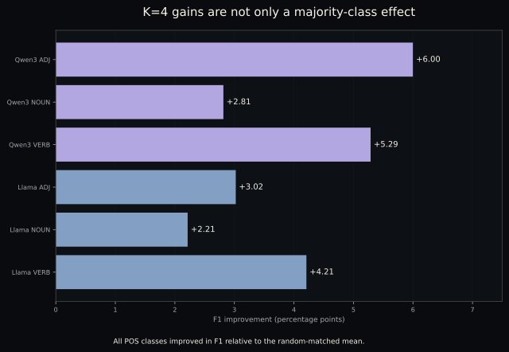
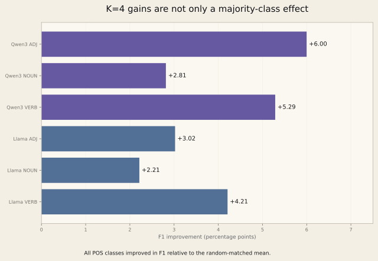

this project asks whether layers selected from morphology-sensitive representational evidence can become better adaptation targets than parameter-matched random layers. before renting GPUs or building a real training backend, i wanted a smaller local check: do layer groups ranked using development-only evidence carry stronger held-out Arabic part-of-speech signal than non-overlapping random groups of the same size?
this run does not test LoRA. it trains deterministic linear controls on concatenated frozen hidden-state features from Qwen3-0.6B and Llama-3.2-1B. the K=4 result repeats in both models and survives all five declared random controls. that is enough to justify a tiny targeted-LoRA intervention. it is not a causal localization claim.
frozen-feature evidence only. this is not a LoRA result, not language-model adaptation evidence, and not evidence that Arabic morphology is causally localized in four layers.
Arabic morphology is a useful test case because the structure is rich and the generalization question matters. related forms can share roots, lemmas, and surface patterns, so an easy random split can reward lexical overlap instead of the kind of held-out morphology signal the experiment is supposed to measure.
random layer adaptation is also a weak control unless it is matched. changing the number of layers, target modules, adapter rank, data, or training budget changes capacity or compute along with layer choice. the contrast i care about is narrower: geometry-selected layers versus non-overlapping random layers, with everything else held fixed.
the local control cannot tell me whether targeted LoRA will work. it can tell me whether the proposed intervention has enough signal to be worth running before i spend money on real training.
dataset paths, SHA-256 checksums, split identifiers, and selection
provenance were held fixed. future-LoRA manifests also declare the
same q_proj/v_proj target group, rank 8,
alpha 16, and matched expected adapter counts within each K.
that module metadata is for future manifest parity. sklearn never
touches q_proj or v_proj. it concatenates
the selected layers' frozen hidden-state vectors and fits a linear
classifier. this is a test of layer-group signal, not adapter
injection.
| model | K | geometry test | random mean ± SD | difference | wins | percentile |
|---|---|---|---|---|---|---|
| Qwen3-0.6B | 1 | 83.49% | 84.91% ± 1.16 | −1.42 pp | 1/5 | 20th |
| Qwen3-0.6B | 2 | 83.96% | 82.83% ± 2.61 | +1.13 pp | 4/5 | 80th |
| Qwen3-0.6B | 4 | 85.85% | 81.79% ± 2.32 | +4.06 pp | 5/5 | 100th |
| Llama-3.2-1B | 1 | 87.74% | 85.09% ± 2.10 | +2.64 pp | 5/5 | 100th |
| Llama-3.2-1B | 2 | 85.38% | 85.28% ± 2.22 | +0.09 pp | 3/5 | 60th |
| Llama-3.2-1B | 4 | 87.26% | 84.53% ± 2.03 | +2.74 pp | 5/5 | 100th |


K=4 is positive for both models and beats all five non-overlapping random controls in both cases. macro-F1 improves by 4.70 points for Qwen and 3.15 points for Llama. the K=1 and K=2 rows matter too: Qwen K=1 fails this control, and Llama K=2 is effectively neutral. the result is not “selected layers always win.” it is a replicated local signal at K=4.
the table reports geometry minus the random-control mean on the held-out test split.
| model | class | precision Δ | recall Δ | F1 Δ |
|---|---|---|---|---|
| Qwen | ADJ | +8.17 pp | +3.81 pp | +6.00 pp |
| Qwen | NOUN | −0.19 pp | +5.37 pp | +2.81 pp |
| Qwen | VERB | +8.71 pp | −0.56 pp | +5.29 pp |
| Llama | ADJ | +0.57 pp | +5.71 pp | +3.02 pp |
| Llama | NOUN | +1.76 pp | +2.54 pp | +2.21 pp |
| Llama | VERB | +6.37 pp | 0.00 pp | +4.21 pp |


the first intervention is already frozen: Qwen3-0.6B, POS, K=4,
geometry layers 7, 8, 18, 20, and five fixed
non-overlapping random controls. every run targets
q_proj/v_proj with rank 8, alpha 16, and
exactly 163,840 trainable adapter parameters. the budget is 200
optimizer steps.
the primary metric is held-out POS macro-F1. success requires the geometry condition to exceed the arithmetic mean of the five random controls and strictly beat at least three of them. accuracy and per-class F1 are secondary diagnostics.
before execution, the model and tokenizer revisions, backend, maximum sequence length, batch and accumulation settings, learning rate, optimizer, scheduler, warmup, weight decay, dropout, precision, evaluation cadence, and checkpoint policy must be frozen. early stopping is disabled for the pilot.
this is a local proof-of-life. development-ranked K=4 layer groups carry stronger held-out POS signal than five non-overlapping random groups in two small decoder models, and the gain appears across all three POS classes. that justifies the intervention experiment. it does not yet claim adaptation success.